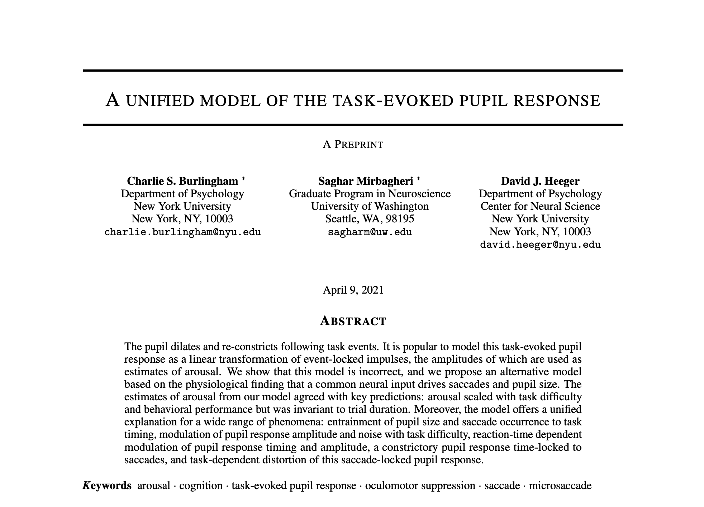
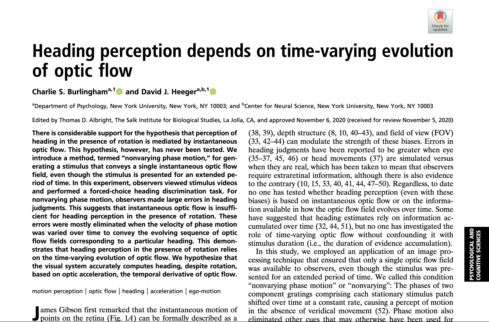
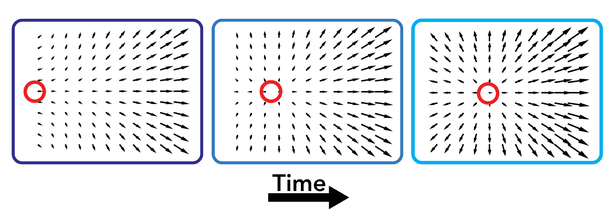
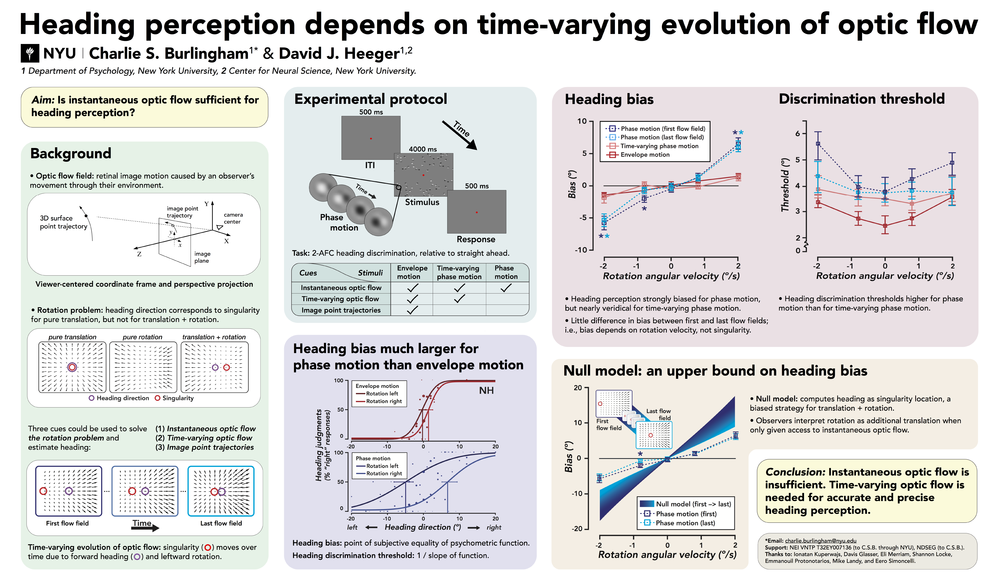
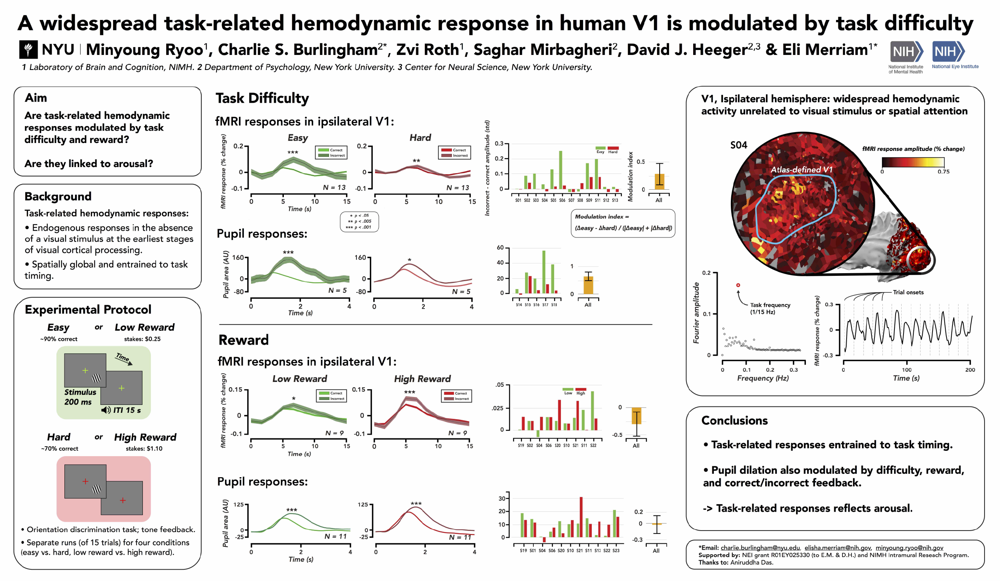

Charlie Burlingham
charlie [dot] burlingham [at] nyu [dot] edu
grad student in
Heeger Lab
(NYU) &
NDSEG
fellow
Projects
A unified model of the task-evoked pupil response

preprint
poster
Heading perception depends on time-varying optic flow


paper
code
poster

Task-related fMRI responses in V1 are modulated by task difficulty and behavioral performance

poster